Result
20Checks
20Passed
0Failed
0Blockers
0Console errors
Test Cases
| ID | Check | Expected | Actual | Status |
|---|---|---|---|---|
| SMK-01 | Login page loads | Username, Password, Login button, logo, version note | All present; title OrangeHRM; demo credentials shown | PASS |
| SMK-02 | Login with empty fields | Validation, no navigation | Two Required messages; URL unchanged | PASS |
| SMK-03 | Login with wrong password | Error, no session | Alert Invalid credentials; URL unchanged | PASS |
| SMK-04 | Login with valid credentials | Redirect to dashboard | /dashboard/index, breadcrumb Dashboard | PASS |
| SMK-05 | Admin module | System Users list | /admin/viewSystemUsers | PASS |
| SMK-06 | PIM module | Employee list | /pim/viewEmployeeList | PASS |
| SMK-07 | Leave module | Leave list | /leave/viewLeaveList | PASS |
| SMK-08 | Time module | Timesheet view | /time/viewEmployeeTimesheet | PASS |
| SMK-09 | Recruitment module | Candidate list | /recruitment/viewCandidates | PASS |
| SMK-10 | My Info module | Personal details | /pim/viewPersonalDetails/empNumber/7 | PASS |
| SMK-11 | Performance module | Review search | /performance/searchEvaluatePerformanceReview | PASS |
| SMK-12 | Dashboard module | Widgets render | /dashboard/index | PASS |
| SMK-13 | Directory module | Employee directory | /directory/viewDirectory | PASS |
| SMK-14 | Maintenance module | Password re-confirmation gate | Heading Administrator Access, password field present | PASS |
| SMK-15 | Claim module | Assign claim page | /claim/viewAssignClaim | PASS |
| SMK-16 | Buzz module | Social feed | /buzz/viewBuzz | PASS |
| SMK-17 | User dropdown | About / Support / Change Password / Logout | Menu rendered | PASS |
| SMK-18 | Logout | Session cleared, login page | Redirect to /auth/login | PASS |
| SMK-19 | Protected route after logout | Deep link blocked | /admin/viewSystemUsers redirected to login | PASS |
| SMK-20 | Forgot password | Reset request form | /auth/requestPasswordResetCode | PASS |
Observations (non-blocking)
- Autocomplete attributes missing — verbose DOM warning on login and Maintenance password inputs:
Input elements should have autocomplete attributes (suggested: "current-password"). - Maintenance collapses main navigation — left menu disappears until the admin password is re-entered. Expected OrangeHRM behavior; navigation must return to the dashboard first.
- My Info breadcrumb shows
PIM— cosmetic inconsistency. - No JavaScript errors logged during the run.
Screenshots

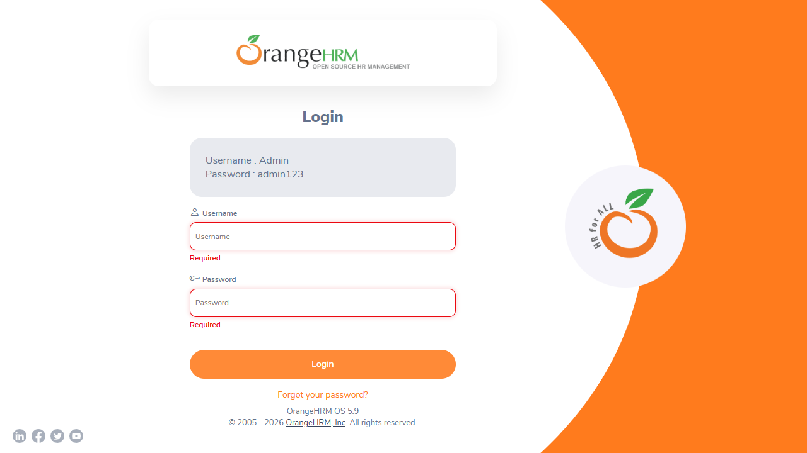
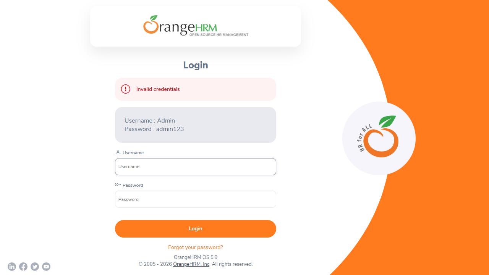
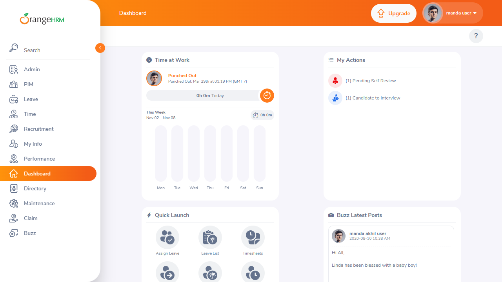
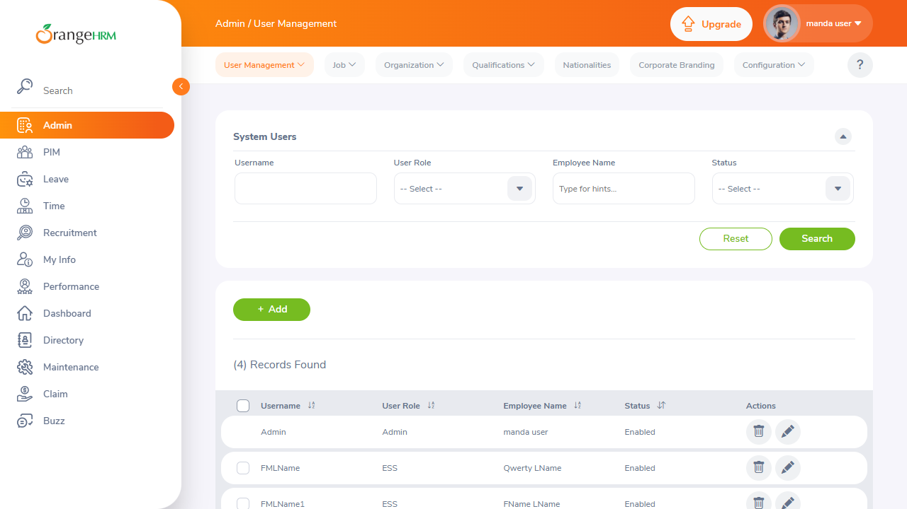
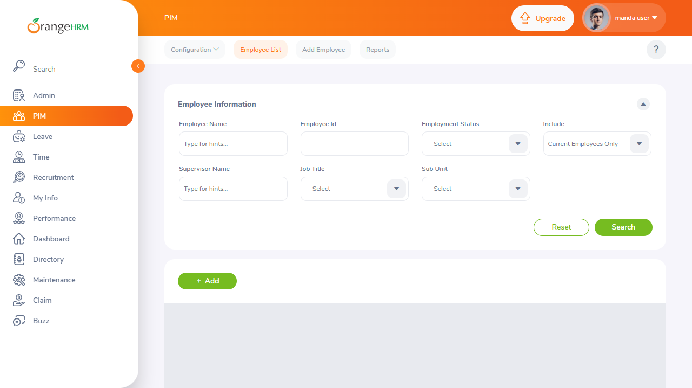
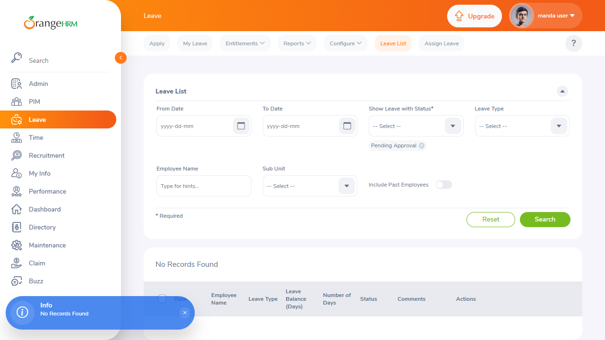
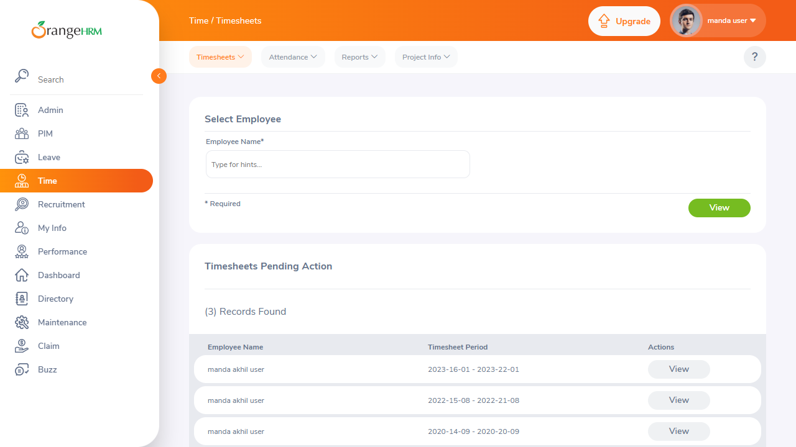
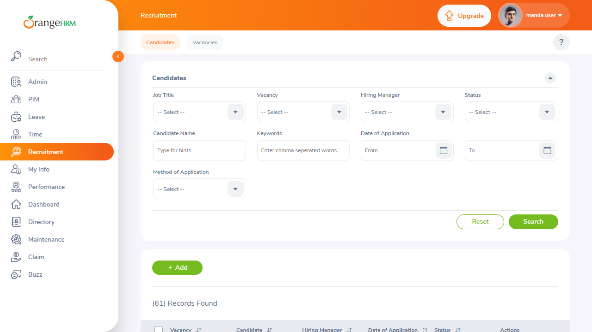
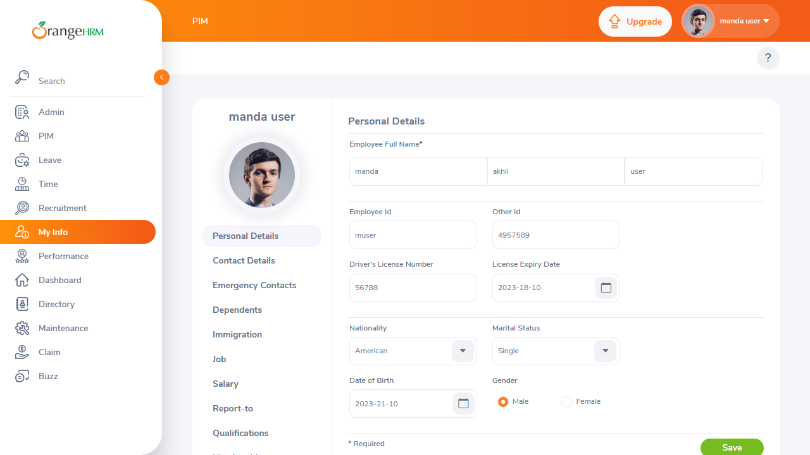
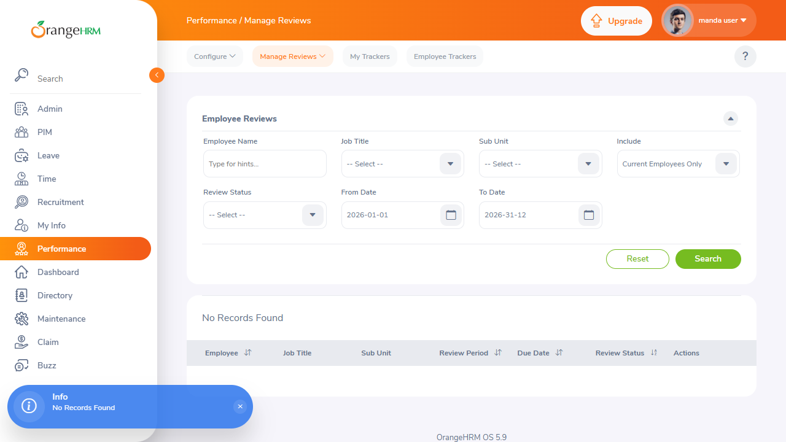
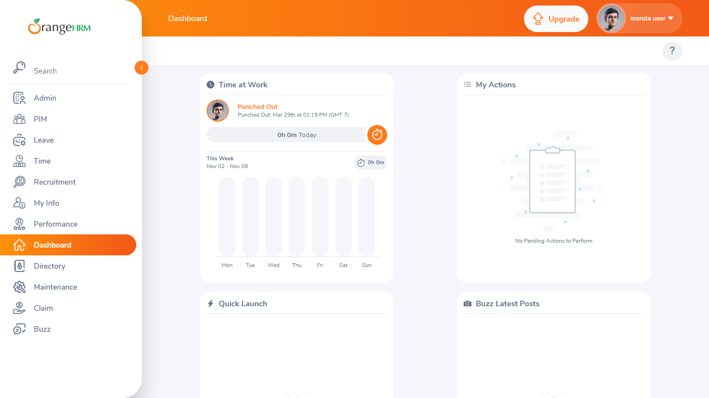
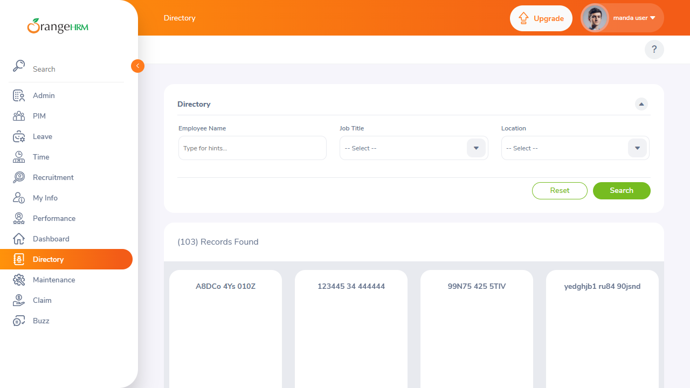
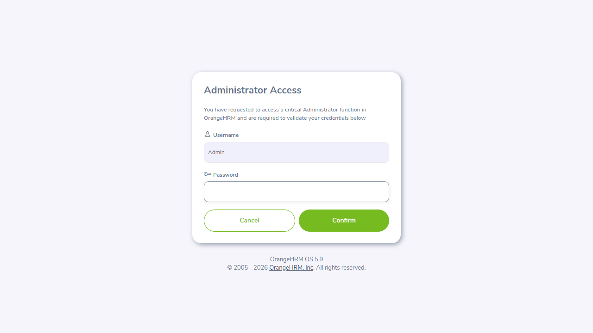
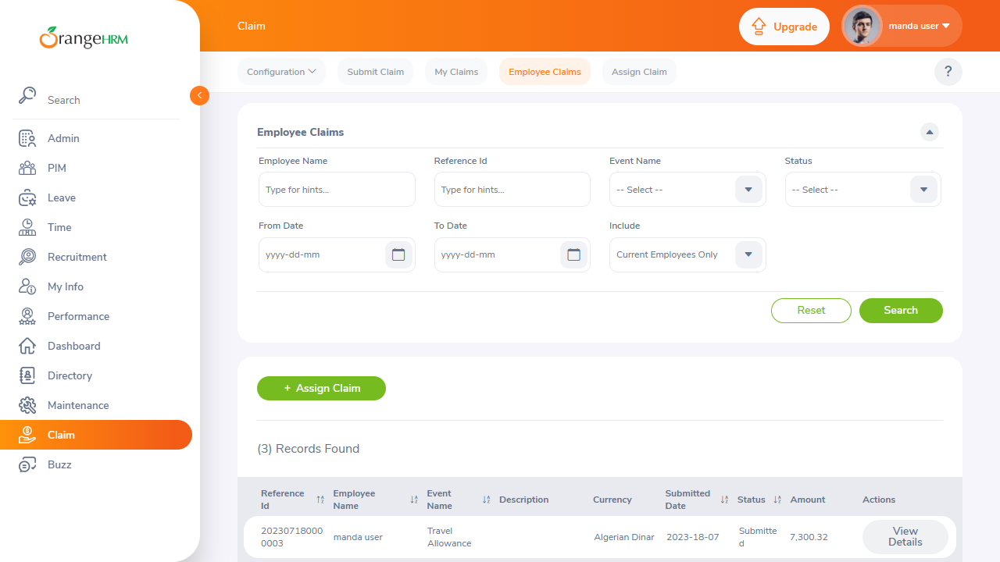
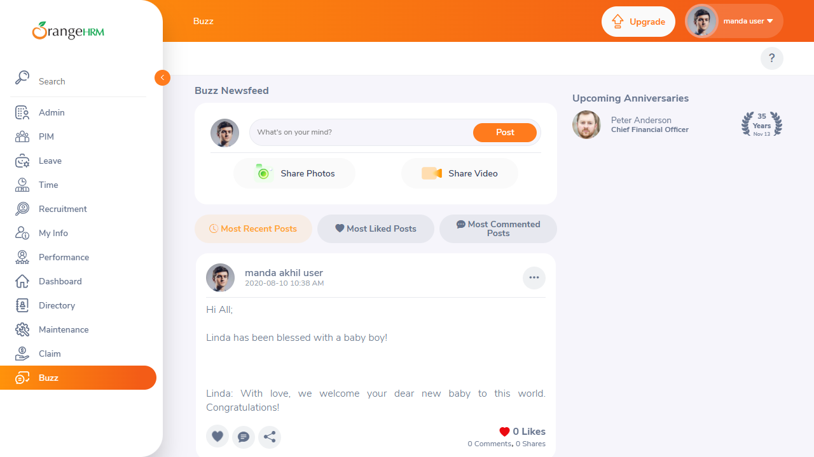
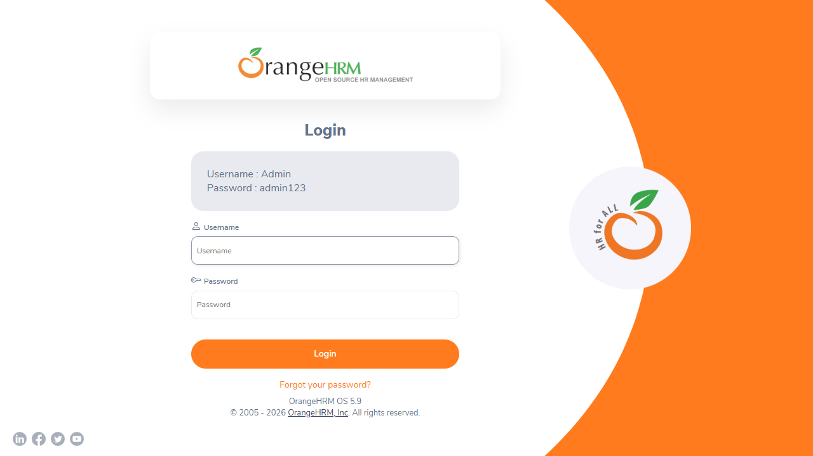

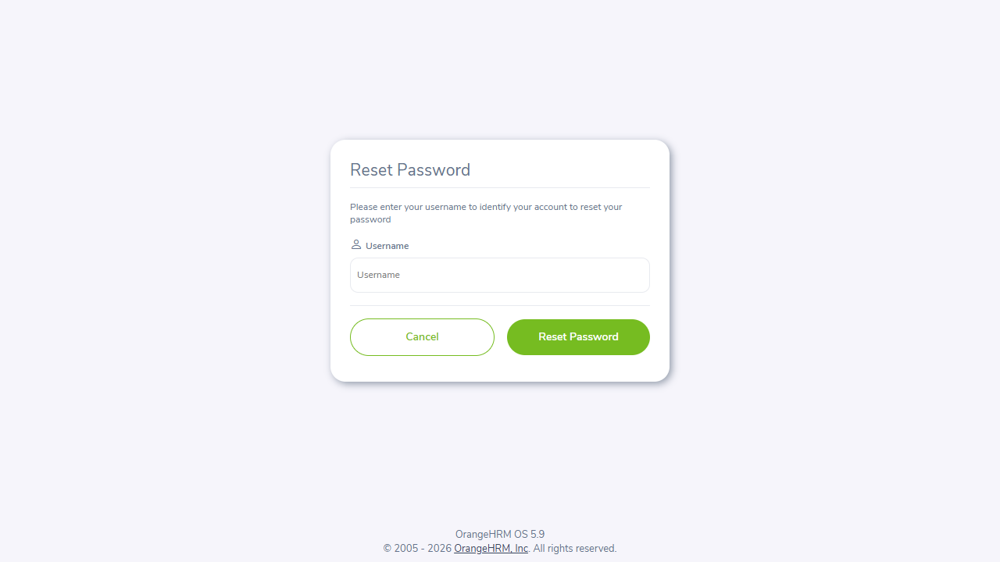